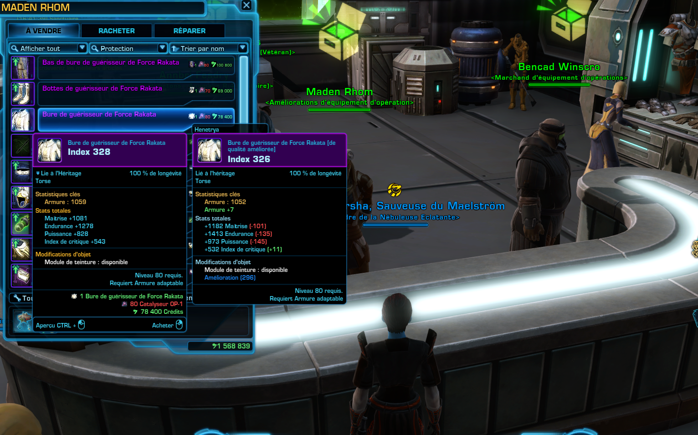
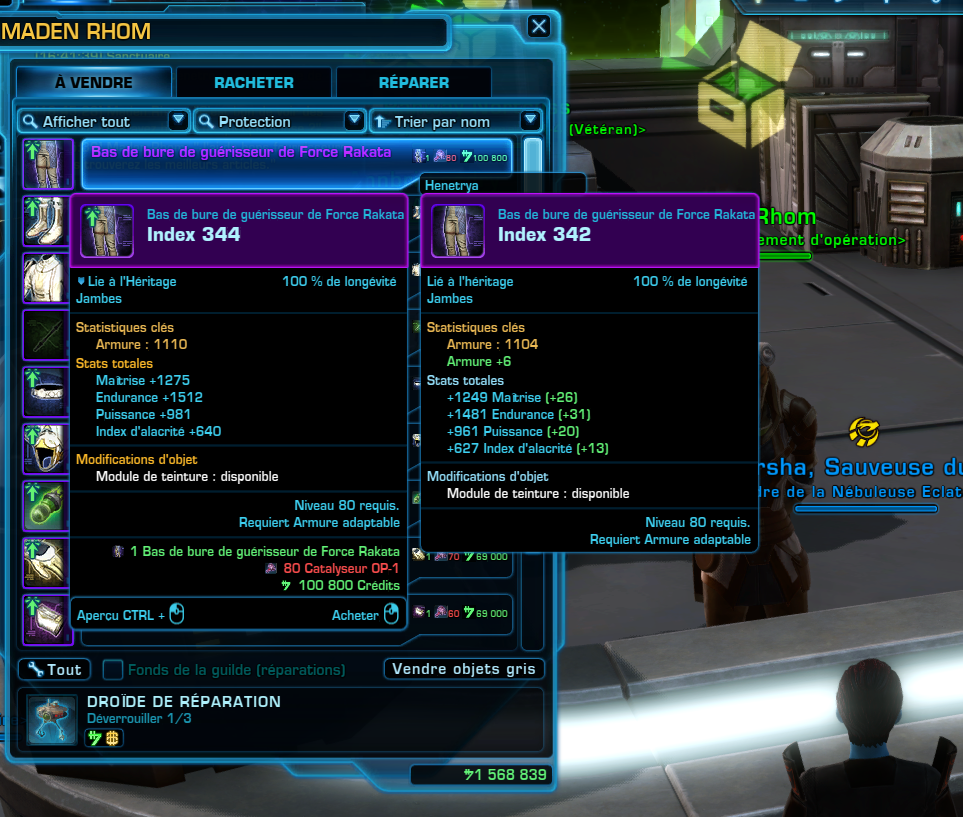
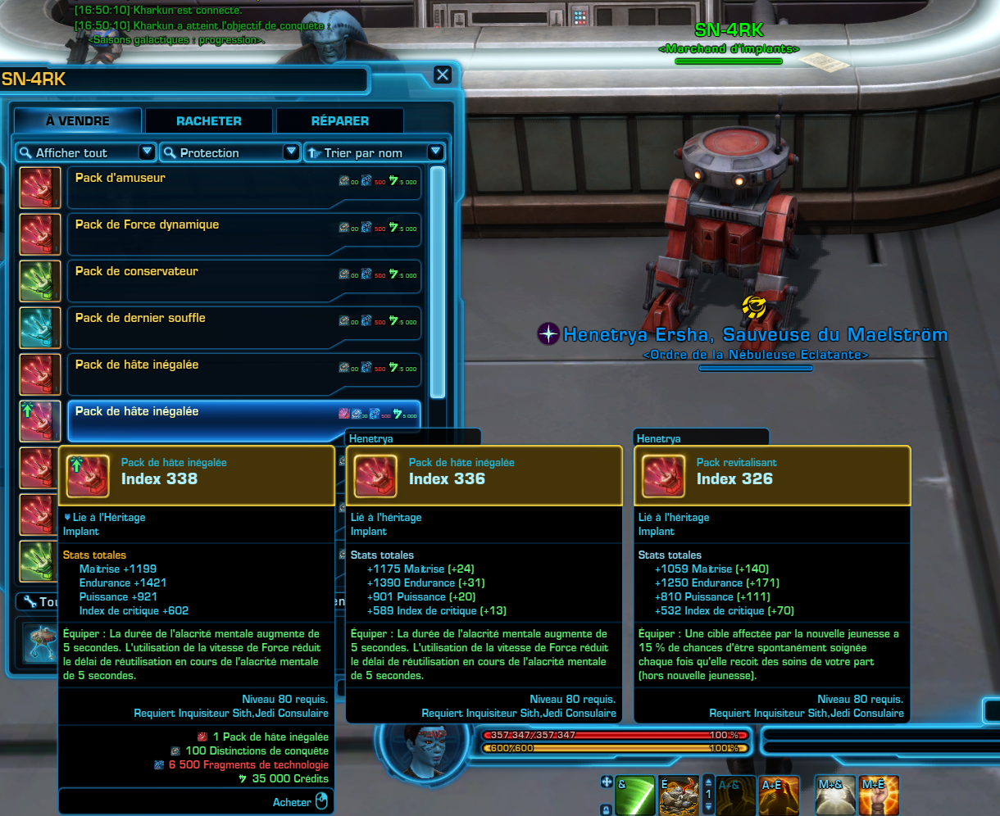
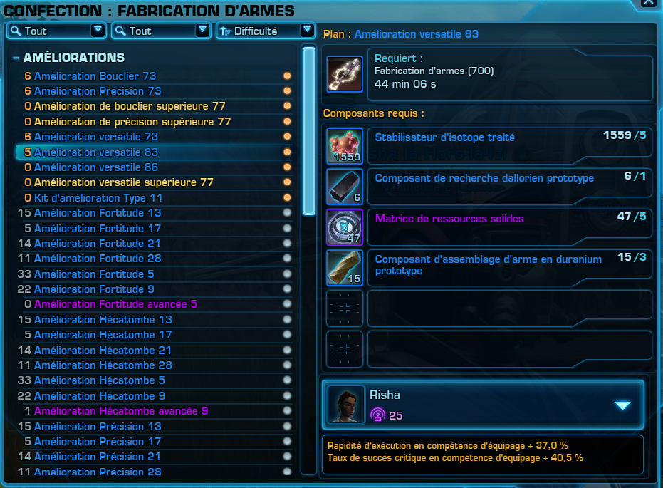
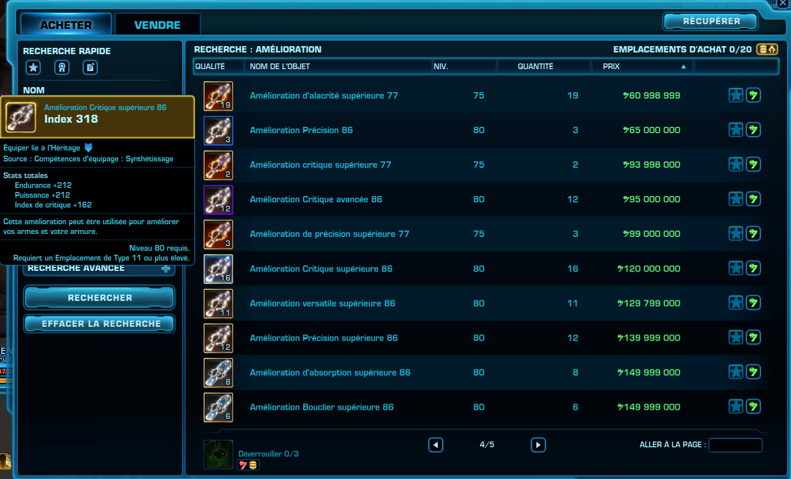
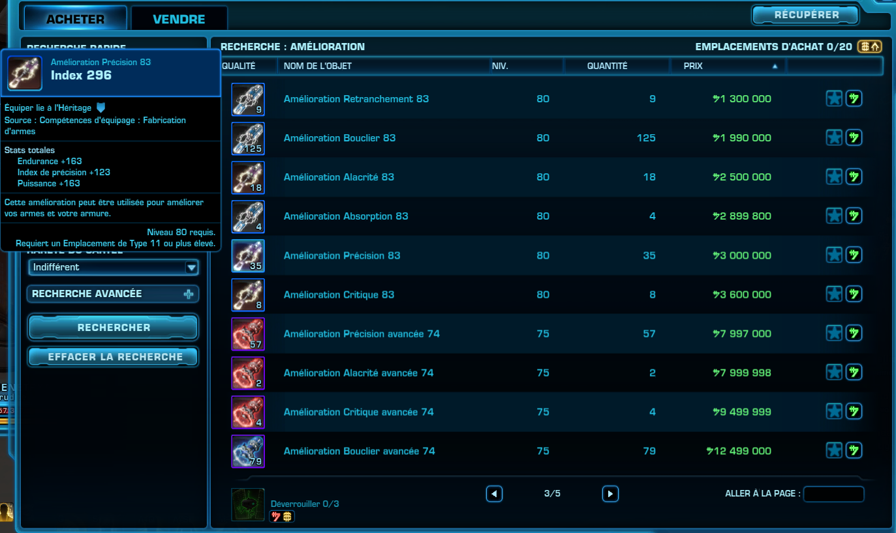
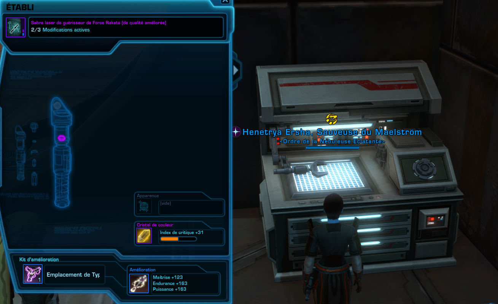

Améliorer mon équipement
Ecrit le 13 mars 2026
7.8.1

De quoi je vais avoir besoin ?
Attention, cette partie est complexe...
. .. D'exactement la même chose que pour acheter votre équipement. Et de crédits... Beaucoup de crédits.
Tout d'abord, l'index
La partie la plus simple, mais aussi la plus longue probablement, sera d'améliorer votre pièces d'équipement Rakata et vos implants.
L'objectif pour cela sera la même que pour les acheter, il faudra juste aller aux bons marchands pour les améliorer.

Améliorer les pièces Rakata se fait sur le vendeur juste à côté de Bencad Winscro, celui auprès duquel vous les avez acheter : Maden Rhom.
Vous verrez qu'il nécessitera la pièce d'index précédent, ainsi que des catalyseurs et quelques crédits, pour augmenter votre index de 2.
Vous aurez besoin pour chaque amélioration d'entre 50 et 80 catalyseurs, et d'environ une centaine de milliers de crédits (n'ayez pas peur, c'est pas ici que vous aurez besoin de beaucoup de crédits).
De cette manière, vous pouvez faire évoluer votre matériel, de l' Index 324, jusqu'à l' Index 344.

En parallèle, vous pourrez améliorer vos implants, mais uniquement jusqu'à l' Index 340, auprès du droïde auquel vous les avez acheté directement.
Attention à bien améliorer ceux que vous avez, et non d'acheter une nouvelle copie d' Index 324.

Pour finir, les modifications
Une fois vos pièces d'équipements à l' Index 344 (ou 340 pour vos implants), vous pourrez vous intéressé à les modifier.
Pour ça, il vous faudra des améliorations, ainsi que des kits d'améliorations de rang 11.
Ceux-ci peuvent être crafté, ou s'acheter auprès d'autres joueurs (dans le GTN (Galactic Trade Network) / REG (Réseau d'Echange Galactique)).

Que vous optiez pour le craft ou l'achat, le prix sera salé. Les kits sont plutôt simple à crafter, et peu cher à l'achat, mais il n'en est pas de même pour les améliorations les plus qualitatives.
Vous voyer ici une des meilleures améliorations : Index 318, l'amélioration supérieure 86, légendaire

Mais je suis pauvre, moi ! Je fais comment avec tout ça ?!
Ne t'inquiète pas, il s'agit de la toute dernière étape d'amélioration de ton équipement, et n'est en règle générale pas nécessaire.
Il existe d'autres alternatives bien moins cher que celles-ci.
Il s'agit tout simplement de se fournir des équipement de moindre niveau, donc l'une parmi :
- l' Amélioration avancée 86, artefact
- l' Amélioration supérieure 77, légendaire
- l' Amélioration 86, prototype
- La plus facile à obtenir à un prix raisonnable, l' Amélioration 83, prototype

Une fois que vous avez tout ça, il est temps de vous rendre sur un établi de modification, et d'installer votre nouveau matériel.
Le matériel installé est supprimé de l'équipement si vous augmentez son index par la suite, donc assurez-vous bien que votre matériel est à son index max avant d'installer tout ça !
